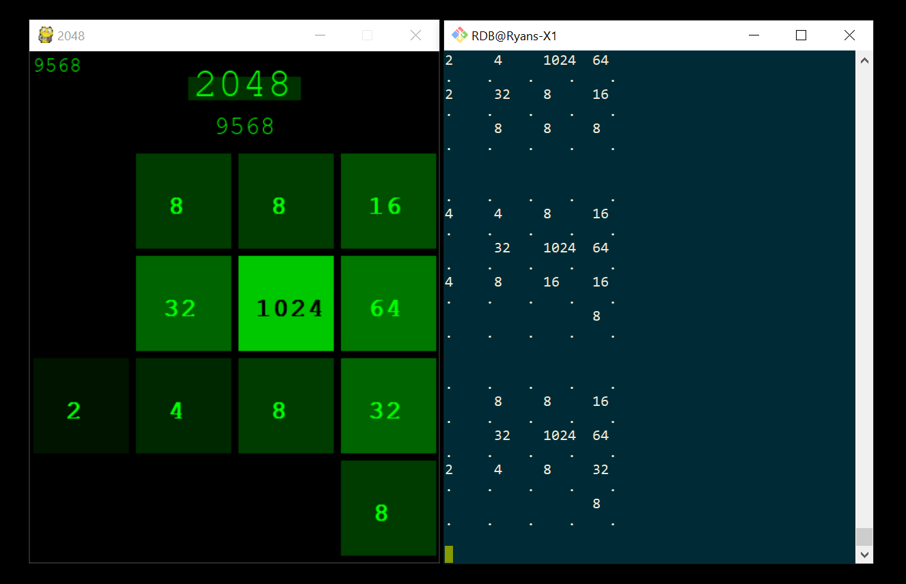

2048 game
Python clone of my favorite mobile game
'2048 is a single-player sliding block puzzle game designed by Italian web developer Gabriele Cirulli. The game's objective is to slide numbered tiles on a grid to combine them to create a tile with the number 2048. However, one can continue to play the game after reaching the goal, creating tiles with larger numbers' --Wikipedia
- Both DESKTOP and COMMAND LINE views
- HIGH SCORE tracking
- GAME OVER & START OVER features